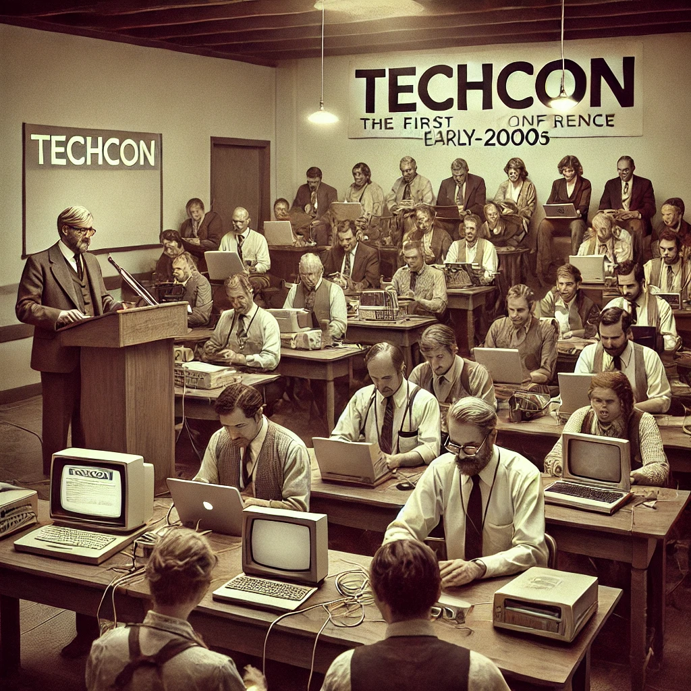

History of TechCon
TechCon was founded in 2010 with the goal of bringing together innovators, professionals, and enthusiasts from the tech industry to share ideas, innovations, and trends. Over the years, it has evolved into one of the leading technology conferences globally.
Our Mission
The mission of TechCon 2024 is to foster collaboration among technology professionals, students, and enthusiasts by providing a platform to explore cutting-edge advancements in technology. We strive to empower individuals and companies to shape the future of the tech industry through knowledge and innovation.

Notable Past Speakers
Over the years, TechCon has been graced by some of the most influential voices in the tech world. Here are a few of our most notable past speakers:

John Doe
John Doe is a renowned tech entrepreneur and the CEO of InnovateX, known for pioneering cloud computing solutions.

Jane Smith
Jane Smith is an AI expert and researcher, contributing to advancements in machine learning and artificial intelligence.